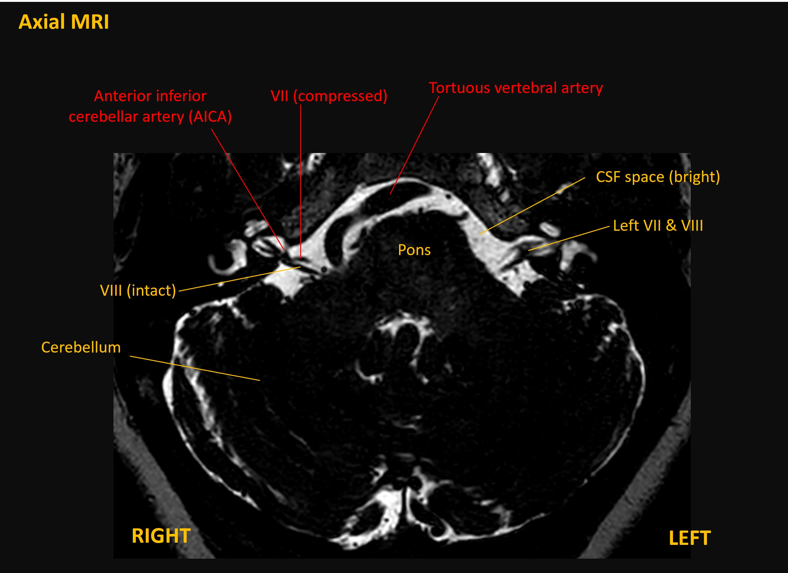
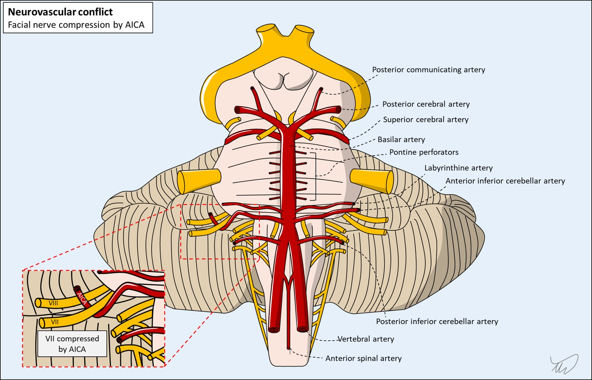

Case 20 - Facial twitching
Outcome
Hemifacial spasm was diagnosed. The patient underwent an MRI which showed neurovascular conflict – with the anterior inferior cerebellar artery (AICA) kinking the right facial nerve at its origin site in the inferior pons (MRI and illustration below).


She was given various options:
She opted for botox. She received this into several areas in the orbicularis oculi muscle on the right. Additional muscle targets including the cheek were considered, but the most debilitating was the orbicularis oris due to its effects on vision - so her therapy focused on that muscle.
She experienced good relief for several months and no side-effects. Injections were continued at 3 monthly intervals. She continues to experience good benefit 4 years later.
Her case is a typical example of hemifacial spasm treatment with botox: injections are not a cure but lead to good remisison in many people, though symptoms can rebound near the end of the 3 month interval. Surgery can be curative, but carries risks, so is often reserved for injection-refractory cases.
Final diagnosisRight hemifacial spasm due to neurovascular conflict between the facial nerve and the AICA, with sustained symptomatic benefit from botulinum toxin.
Key points